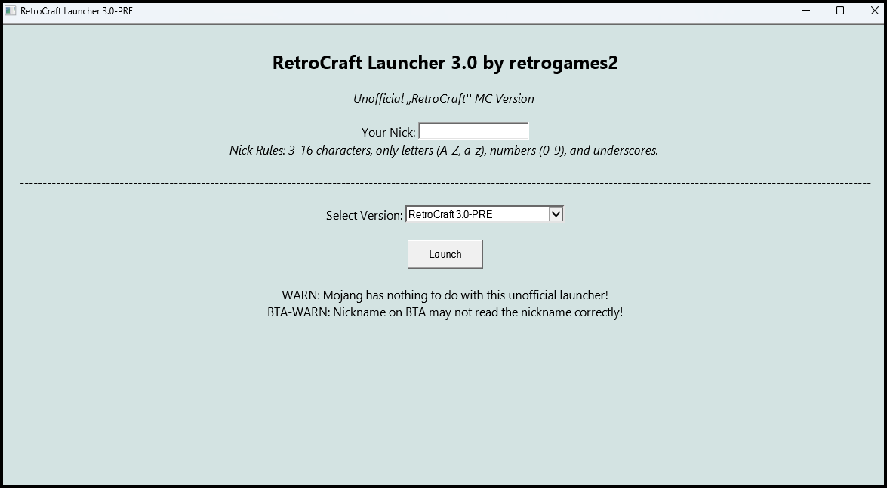

Download RetroCraft 3.0 -PRE!

RetroCraft is my free fan-made edition of Minecraft beta 1.7.3.
This version has improved textures and launching is now much easier!
RetroCraft already has Java built in, so you don't need to install it.
Before playing, make sure your computer has at least 2GB of RAM,
as having less than that can cause your system to crash.
Download HERE:
RetroCraft Launcher 3.0-PRE X Better Than Adventure! v7.3_04
The latest Better Than Adventure v7.3_04 mod has been added to the latest version of the
retrocraft launcher. Everything is still free, but the nickname may not load correctly, instead, it
will be replaced with the player[random number] nickname. Link to the official BTA website:
----BTA! Link----
Public Serwers IP:
- play.wulfcraft.net
- betamc.org
- play.backtobeta.org
- old.livecraft.net
- 24.65.101.3
- os-mc.net
- play.oldstone.cc
- 2beta2t.net
CONTACT:
minemator.animation@gmail.com